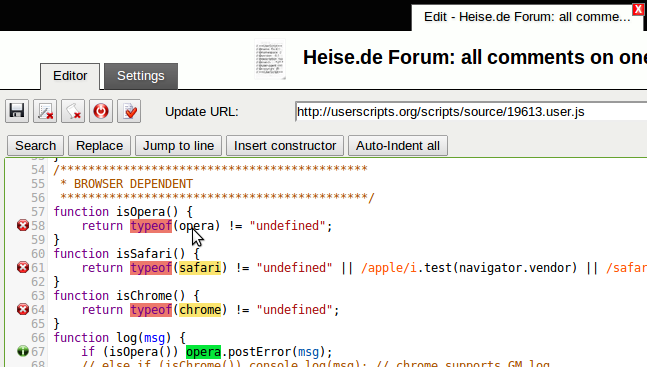

油猴用了两年，我想说说那些当初没注意到的事
从第一次装上到现在两年多，Tampermonkey 从一个"听说很火"的浏览器扩展变成了每天不离的工具。时间给了我一些新的感受，有些是惊喜，有些是当初没想到的小麻烦。
装 Tampermonkey 的缘由很简单——那阵子在某个论坛上看到有人晒"网页一键去除广告"的截图，我问了一句"这怎么做到的"，对方只回了两个字：油猴。我去tampermonkey官网看了下介绍，花了三分钟装上，又花了十分钟在脚本库里找了二十个看起来很厉害的脚本，一股脑全装了。
那是两年前的事了。现在回头看，当初的自己完全不知道自己在干什么，但那份冲动恰好是对的——这个扩展真的改变了我每天打开浏览器时的体验。
越用越顺手的几个细节
刚装的时候最困惑的是角标数字。地址栏那个小图标右下角偶尔冒个"3"是什么意思？后来才明白，那表示当前页面有三个脚本正在跑。这个设计简单到几乎不存在，但真正用起来时，它成了我判断"这个页面为什么变成这样"的第一线索。角标消失了、弹出菜单里脚本灰了、@match 规则没覆盖——排查问题的顺序就是从角标开始一层层往下剥。
弹出菜单的启停功能也是慢慢才习惯的。之前我以为要改脚本的 @match 才能控制它在哪运行，其实点一下图标就能临时禁用某个脚本。写一个只在自己测试页跑的小脚本，写完忘了改回来，跑到真实站点上乱加按钮怎么办？现在第一反应不是去翻脚本头部，而是弹菜单、点开关、刷新——三秒钟搞定。
还有同步。Tampermonkey 内置了跨浏览器同步，我把家里的 Chrome 和公司的 Edge 连了同一个同步账户，脚本自动跟着走。去年换笔记本的时候，装好扩展、登同步、喝了杯水的功夫，二十多个脚本全回来了。这个功能的存在感很低，但没有它的话，我大概会在某个周一早上对着空白的管理面板发十分钟的呆。

那些当初没发现的小麻烦
Site Access 权限警告是我踩过的最大的坑。有阵子我发现脚本更新不了，跨域请求也莫名其妙失败，弹出菜单里多了一行红色的 Limited runtime host permissions 警告。我以为是脚本作者改了什么兼容性设置，跑去论坛问，有人回我"你去扩展详情页看看 Site Access 设的什么"。果然，浏览器某次自动更新把权限从"在所有网站上"收窄到了"在特定站点上"，而我的常用站点没全列进去。改回来就好了，但排查那两个小时的心情，真的不如直接去官方下载重装一遍。
脚本自动更新带坏兼容性也遇到过。一个用来自动展开分页内容的脚本，某天更新后不跑了，角标数字没了、管理面板里条目还在、启用状态也没问题——最后是脚本更新日志里作者写了"适配新版浏览器 API，移除了旧版兼容代码"。我回退了一个版本，恢复了。从那以后我养成了一个习惯：重要脚本关掉自动更新，每周手动检查一次，更新前先看 changelog。
还有 @grant 的问题。刚开始自己写脚本的时候，模板里默认是 none，以为所有 GM 函数都能用。直到某次加了个 GM_setValue 想存点偏好设置，脚本静默失败了——控制台里什么都没报，就是不存。后来去tampermonkey文档翻了一下才知道，用哪个 GM 函数就要在 @grant 里声明哪个，none 意味着什么权限都不给。这个设计在安全上是对的，但对新手来说真的不够友好，编辑器不会提醒你缺权限，跑起来才发现。
哪些功能成了每天离不开的，哪些碰都没碰
每天离不开的是 GM_setValue / GM_getValue。我自己写了个小脚本，在某个论坛上自动记住"上次看到第几页"和"哪些帖子已经读过"。这些数据存在脚本自己的存储区里，换设备还能跟着同步。听起来是个很小的功能，但每天打开那个论坛，直接跳到上次离开的位置——这个体验没有它我受不了。
弹菜单里的脚本计数器也很实用。有时候一个页面加载完，我会瞟一眼角标，看看有没有哪个不该跑的脚本跑了。有一次装了个新的翻译脚本，它的 @match 规则写得太宽，跑到了内网系统上，把一堆专有名词都翻译了。角标显示"5"，我点进去一看，那个翻译脚本赫然在列——禁用、刷新，三十秒解决。
碰都没碰的是剪贴板操作相关的 GM 函数，还有那些需要复杂权限的跨站点联动脚本。装过两三个号称"在 A 网站收藏、同步到 B 网站"的脚本，每次都要弹出授权确认框，让我放行这个域名、那个域名。我嫌烦，全删了。后来想想，这些功能的价值确实不大，而且安全边界太模糊。

长期用下来，有些判断被修正了
刚装的时候我以为油猴是万能的——网页上任何不舒服的地方都能改。事实是它的边界很清晰：浏览器内部的界面改不了，网站服务端的验证逻辑绕不过，脚本跑不跑完全取决于作者写得怎么样。有一阵子我想找个脚本能让某个下载站自动破解验证码，找了一圈，没有，也不可能有。油猴能改的是页面，改不了服务器那边的事。
还有安全判断。刚装的时候我基本上见脚本就装，觉得社区推荐的应该没问题。直到有一天看到一个热门脚本的评论区有人说它偷偷上传浏览历史——虽然作者后来出来澄清是误报，但从那以后我装脚本前会多做一件事：打开脚本源代码扫一眼头部的 @grant 声明和几处关键逻辑。看不懂的地方不管，先看它要了哪些权限、会不会发跨域请求。这个习惯花不了一分钟，但让我省了好几次麻烦。
会不会卸载
暂时不会。如果哪天出现这几种情况可能会考虑：浏览器内核大改导致 Tampermonkey 适配出问题、主要脚本长期不更新且兼容性恶化、或者我自己的脚本列表精简到只剩三四个而且都没什么必要。但目前看来都没有迹象。
油猴本质上是个"网页补丁管理器"——它不改浏览器、不改系统、不改网站代码，只在你打开页面的时候注入一点自己的逻辑。两年用下来，它给我带来的实际便利，比当初那十分钟装二十个脚本的冲动，要扎实得多。这类工具的用法散落在各处，我整理的一份中文资料分别同步在了GitHub、Gitee和GitCode，免得其中一个平台访问不畅时无处可查。